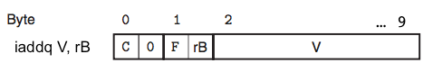

INF 559 |
In the first part of this lab (first week) we will make our first steps in assembly programming and will learn about the design of a sequential Y86-64 processor. In the second part (second week), you will learn about the design and implementation of a pipelined Y86-64 processor, optimizing both it and a benchmark program to maximize performance. You are allowed to make any semantics preserving transformations to the benchmark program, or to make enhancements to the pipelined processor, or both. When you have completed the lab, you will have a keen appreciation for the interactions between code and hardware that affect the performance of your programs.
The lab is organized into three parts, each with its own handin. In Part A you will write some simple Y86-64 programs and become familiar with the Y86-64 tools. In Part B, you will extend the SEQ simulator with a new instruction. These two parts will prepare you for Part C, the heart of the lab, where you will optimize the Y86-64 benchmark program and the processor design.
This is an individual project. All handins are electronic. Clarifications and corrections will be posted on the course moodle.
tar xvf archlab-handout.tar. This will
cause the following files to be unpacked: README, sim.tar, simguide.pdf. cd archlab-handout and then tar xvf sim.tar. This will create the
directory sim, which contains your personal copy of the Y86-64
tools. You will be doing all of your work inside this directory.$ cd sim (optional but recommended: uncomment the GUIMODE=-DHAS_GUI line in the Makefile to build the graphical simulator) $ make clean; make
You will be working in directory sim/misc in this part.
Your task is to write and simulate the following three Y86-64 programs. The required behavior of these programs is defined by the example C functions in examples.c. Be sure to put your name and ID in a comment at the beginning of each program. You can test your programs by first assemblying them with the program yas and then running them with the instruction set simulator yis.
Write a program (expr.ys) that computes the C expression:
y = x > 5 ? x+1 : x;
Test you program with the two test cases below:
y == -1):
.pos 256 x: .quad 0xffffffffffffffff y: .quad 0x00
y == 13):
.pos 256 x: .quad 0x0c y: .quad 0x00
Assembly it by issuing (inside the directory misc):
$ ./yas expr.ys
Ther generated object file expr.yo, will be a memory dump where
the instructions have been encoded starting from memory location
0, and 16 bytes have been reserved for the variables x
and y starting at location 0x64 (= 100 in hex) and
initialised with c and 0. You can then run the
instruction simulator with:
$ ./yis expr.yo
This will print the final state reached by the program (you cannot do step-by-step with the instruction simulator). Alternatively, you can run the simulator of the SEQ architecture with:
$ (cd ../seq; ./ssim -g ../misc/expr.yo)
Observe that both the instruction simulator and the SEQ simulator require an object file.
Write a program (copy.ys) that copies a block of words from one part of memory to another (non-overlapping) area of memory, computing the checksum (Xor) of all the words copied.
Your program should consist of code that
should be functionally equivalent
to the C code shown
below, where len, src, dest, and result are global
variables:
00 /* copy_block - Copy src to dest and return xor checksum of src */ 03 result = 0; 04 while (len > 0){05 int val = *src++; 06 *dest++ = val; 07 result ^= val; 08 len--; 09}
Test your program using the following three-element source and destination blocks:
.align 8
# Source block
src:
.quad 0x00a
.quad 0x0b0
.quad 0xc00
# Destination block
dest:
.quad 0x111
.quad 0x222
.quad 0x333
# Length
len:
.quad 0x3
To understand the memory layout of the example, remember that an array is stored in memory by placing contiguosly (at increasing addresses) its content: the example corresponds to the familiar C declaration:
long src[] = {0x00a, 0x0b0, 0xc00};
long dst[] = {0x111, 0x222, 0x333};
long len = 3;
The address of the array elements can be computed by adding on offset
to the base address of the array. In the example, as src is
stored from location 100, we get that src[0] is at
address 100, src[1] at 108 (that is 100
plus the with of one long int which is 8), src[2] at
110. The addressing mode D(rA) enables an easy
computation of these addresses: the constant D will be the address of
src (statically computed by the assembler pass), and
the offset can be kept in the register rA.
You will be working in directory sim/seq in this part.
Your task in Part B is to extend the SEQ processor to support the iaddq, with the following format:

This instruction adds the constant value V to register rB.
To add this instructions, you will modify the file seq-full.hcl, which implements the version of SEQ described in the CS:APP3e textbook for the Y86-64 architecture. In addition, it contains declarations of some constants that you will need for your solution.
Your HCL file must begin with a header comment containing the following information:
Once you have finished modifying the seq-full.hcl file, then you will need to build a new instance of the SEQ simulator (ssim) based on this HCL file, and then test it:
unix> make VERSION=fullThis builds a version of ssim that uses the control logic you specified in seq-full.hcl. To save typing, you can assign VERSION=full in the Makefile.
unix> ./ssim -t ../y86-code/asumi.yoIf the ISA test fails, then you should debug your implementation by single stepping the simulator in GUI mode:
unix> ./ssim -g ../y86-code/asumi.yo
unix> (cd ../y86-code; make testssim)This will run ssim on the benchmark programs and check for correctness by comparing the resulting processor state with the state from a high-level ISA simulation. Note that none of these programs test the added instructions. You are simply making sure that your solution did not inject errors for the original instructions. See file ../y86-code/README file for more details.
unix> (cd ../ptest; make SIM=../seq/ssim)To test your implementation of iaddq:
unix> (cd ../ptest; make SIM=../seq/ssim TFLAGS=-i)
For more information on the SEQ simulator refer to the handout CS:APP3e Guide to Y86-64 Processor Simulators (simguide.pdf).
You will be working in directory sim/pipe in this part.
The ncopy function in Figure 1 copies a len-element integer array src to a non-overlapping dst, returning a count of the number of positive integers contained in src.
1 /* 2 * ncopy - copy src to dst, returning number of positive ints 3 * contained in src array. 4 */ 5 word_t ncopy(word_t *src, word_t *dst, word_t len) 6{7 word_t count = 0; 8 word_t val; 9 10 while (len > 0){11 val = *src++; 12 *dst++ = val; 13 if (val > 0) 14 count++; 15 len--; 16}17 return count; 18}
Figure 1: C version of the ncopy function. See sim/pipe/ncopy.c.
Figure 2 shows the baseline Y86-64 version of ncopy.
1 ################################################################## 2 # ncopy.ys - Copy a src block of len words to dst. 3 # Return the number of positive words (>0) contained in src. 4 # 5 # Include your name and ID here. 6 # 7 # Describe how and why you modified the baseline code. 8 # 9 ################################################################## 10 # Do not modify this portion 11 # Function prologue. 12 # %rdi = src, %rsi = dst, %rdx = len 13 ncopy: 14 15 ################################################################## 16 # You can modify this portion 17 # Loop header 18 xorq %rax,%rax # count = 0; 19 andq %rdx,%rdx # len <= 0? 20 jle Done # if so, goto Done: 21 22 Loop: mrmovq (%rdi), %r10 # read val from src... 23 rmmovq %r10, (%rsi) # ...and store it to dst 24 andq %r10, %r10 # val <= 0? 25 jle Npos # if so, goto Npos: 26 irmovq $1, %r10 27 addq %r10, %rax # count++ 28 Npos: irmovq $1, %r10 29 subq %r10, %rdx # len-- 30 irmovq $8, %r10 31 addq %r10, %rdi # src++ 32 addq %r10, %rsi # dst++ 33 andq %rdx,%rdx # len > 0? 34 jg Loop # if so, goto Loop: 35 ################################################################## 36 # Do not modify the following section of code 37 # Function epilogue. 38 Done: 39 ret 40 ################################################################## 41 # Keep the following label at the end of your function 42 End:
Figure 2: Baseline Y86-64 version of the ncopy function. See sim/pipe/ncopy.ys.
The file pipe-full.hcl contains a copy of the HCL code for PIPE, along with a declaration of the constant value IIADDQ.
Your task in Part C is to modify ncopy.ys and pipe-full.hcl with the goal of making ncopy.ys run as fast as possible.
You will be handing in two files: pipe-full.hcl and ncopy.ys. Each file should begin with a header comment with the following information:
You are free to make any modifications you wish, with the following constraints:
unix> ./check-len.pl < ncopy.yo
Other than that, you are free to implement the iaddq instruction if you think that will help. You may make any semantics preserving transformations to the ncopy.ys function, such as reordering instructions, replacing groups of instructions with single instructions, deleting some instructions, and adding other instructions. You may find it useful to read about loop unrolling in Section 5.8 of CS:APP3e.
In order to test your solution, you will need to build a driver program that calls your ncopy function. We have provided you with the gen-driver.pl program that generates a driver program for arbitrary sized input arrays. For example, typing
unix> make drivers
will construct the following two useful driver programs:
Each time you modify your ncopy.ys program, you can rebuild the driver programs by typing
unix> make drivers
Each time you modify your pipe-full.hcl file, you can rebuild the simulator by typing
unix> make psim VERSION=full
If you want to rebuild the simulator and the driver programs, type
unix> make VERSION=full
To test your solution in GUI mode on a small 4-element array, type
unix> ./psim -g sdriver.yo
To test your solution on a larger 63-element array, type
unix> ./psim -g ldriver.yo
Once your simulator correctly runs your version of ncopy.ys on these two block lengths, you will want to perform the following additional tests:
unix> make drivers unix> ../misc/yis sdriver.yo
unix> ./correctness.plThis script generates test programs where the result count varies randomly from one run to another, and so it provides a more stringent test than the standard drivers.
If you get incorrect results for some length K, you can generate a driver file for that length that includes checking code, and where the result varies randomly:
unix> ./gen-driver.pl -f ncopy.ys -n K -rc > driver.ys unix> make driver.yo unix> ../misc/yis driver.yo
The program will end with register %rax having the following
value:
unix> (cd ../y86-code; make testpsim)This will run psim on the benchmark programs and compare results with yis.
unix> (cd ../ptest; make SIM=../pipe/psim TFLAGS=-i)
unix> ./correctness.pl -p
The lab is worth 115 points: 30 points for Part A, 25 points for Part B, and 100 points for Part C.
Part A is worth 30 points, 15 points for each Y86-64 solution program. Each solution program will be evaluated for correctness, including proper handling of registers, as well as functional equivalence with the example C functions in examples.c.
The program expr.ys will be considered correct if the graders
do not spot any errors in it, and it sets y to 0xff on
test 1, and to 0x0d on test 2.
The program copy.ys will be considered correct if the graders do not spot any errors in it, and the copy_block function returns the sum 0xcba in register %rax, copies the three 64-bit values 0x00a, 0x0b, and 0xc to the 24 bytes beginning at address dest, and does not corrupt other memory locations.
This part of the lab is worth 25 points:
This part of the Lab is worth 100 points: You will not receive any credit if either your code for ncopy.ys or your modified simulator fails any of the tests described earlier.
We will express the performance of your function in units of cycles per element (CPE). That is, if the simulated code requires C cycles to copy a block of N elements, then the CPE is C/N. The PIPE simulator displays the total number of cycles required to complete the program. The baseline version of the ncopy function running on the standard PIPE simulator with a large 63-element array requires 897 cycles to copy 63 elements, for a CPE of 897/63 = 14.24.
Since some cycles are used to set up the call to ncopy and to set up the loop within ncopy, you will find that you will get different values of the CPE for different block lengths (generally the CPE will drop as N increases). We will therefore evaluate the performance of your function by computing the average of the CPEs for blocks ranging from 1 to 64 elements. You can use the Perl script benchmark.pl in the pipe directory to run simulations of your ncopy.ys code over a range of block lengths and compute the average CPE. Simply run the command
unix> ./benchmark.pl
to see what happens. For example, the baseline version of the ncopy function has CPE values ranging between 29.00 and 14.27, with an average of 15.18. Note that this Perl script does not check for the correctness of the answer. Use the script correctness.pl for this.
You should be able to achieve an average CPE of less than 9.00. Our best version averages 7.48. If your average CPE is c, then your score S for this portion of the lab will be:
|
By default, benchmark.pl and correctness.pl compile and test ncopy.ys. Use the -f argument to specify a different file name. The -h flag gives a complete list of the command line arguments.
Make sure you have included your name and ID in a comment at the top of each of your handin files. Then identify yourself with your login and password:
You will be handing in three sets of files:
unix> setenv DISPLAY myhost.edu:0
This document was translated from LATEX by HEVEA.